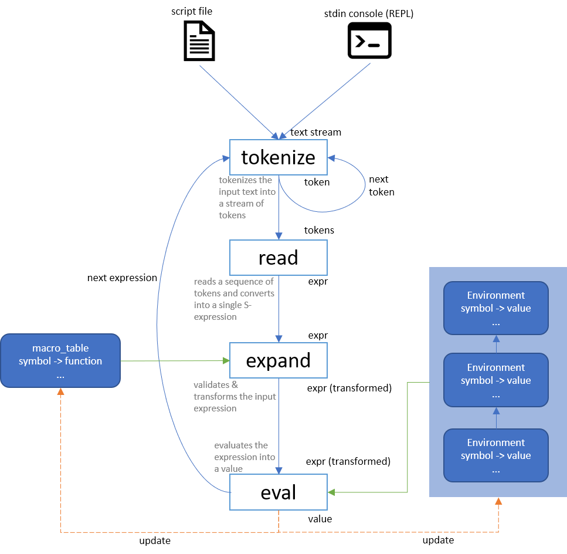

How to write a Scheme interpreter
Contents
This article describes the design and implementation of the Schemy interpreter. Note that the design and implementation of schemy is heavily inspired by Peter Norvig's article.
tl;dr - here's a flowchart summarizing an implementation of a scheme interpreter:

S-Expression
S-expression is the central construct of a Scheme program. An S-expression can be in the form of any of the following:
-
a value, e.g.,
3.14,"some text", or any other values that your runtime supports (in the case of schemy, this could be any .NET object we exposed). -
a symbol, e.g.,
count(a variable),sum(a function). -
a list of s-expressions, e.g.,
(sum (+ 1 x) y (get-value "total"))
Formally:
Expression := Symbol | (Expression ...) | Value
S-Expression representation
In Schemy, we simply represent an expression as an object, which could be either:
- an instance of a
Symbol - a list of objects
- any .NET object
In a language that supports discriminated union, it could be more elegantly modeled. But that's not in the scope of this discussion.
One may also note that in above representation, #2 and #3 could overlap - a .NET object (#3) could be a list of objects that could be treated by the interpreter as an expression (#2). This is as expected, and a powerful feature - in Scheme, a program (s-expression) can be treated as data - and be processed, transformed! This is called Homoiconicity.
Evaluation
Now, S-expression alone is not very useful alone. For example, for a symbol
s-expression count, it doesn't make much sense without knowing what information count
holds. This leads to the concept of evaluating an s-expression.
S-expression is evaluated in a context, or "environment", which is nothing but a mapping
from symbols to values. Therefore we could define a EvaluateExpression function:
eval(expr: Expression, env: Environment) -> object
-
If
expris already a value, simply return it -
If
expris a symbol, we just look up that symbol inenvand return the value -
If
expris a list of s-expressions - this could be a syntax form evaluation or function invocation. In the simplest idea, we first evaluate each element expression of the list recursively, then depending on the meaning of the first value (a function, or a syntax form indicator, e.g,if), we handle them differently. Below gives some examples on how to handle them naively, just for illustration, we'll cover optimizations later.-
for
(if test conseq alt), we evaluatetest, if true, we evaluate and returnconseq, otherwise,alt. -
for
(define id expr), we evaluateexpr, and update the environment to associate symbolidto value ofexpr. -
for
(func expr1 expr2 expr3), this is function invocation. We drill into the detail in the following section.
-
Function
What is a function and how to invoke a function? A function is made of the following parts:
- a list of parameters - this is a list of symbols which should be bound to some value at invocation time.
- an environment under which the body expression should be evaluated
- an s-expression representing the body (or implementation) of the function. This s-expression usually references some symbols whose definitions reside either in the parameters (defined at invocation time) or in the environment (defined at definition time - lexical scoping (see below))
Now for a function defined as:
1 | (define f (lambda (x y) (+ x y))) |
And when we evaluate (f 1 2), we first make an environment containing the mapping x=1, y=2, and evaluate the body (+ x y) by using the parameters environment.
But that's not really what happens. What if the body of f references symbols which are
not as the parameters, e.g.:
1 | (define x 2) |
When invoking (f 3), we would bind y=3. But where to get value for x? When we
define f, its environment contains the definition for x. So when we construct the
parameter environment for the invocation, we link it to an outer environment that contains
x=2. And the lookup logic for a key in a environment is this:
- Try to look up the key in current environment's symbol table. If found, return it.
- If not found in current environment, go to the parent (outer) environment and attemp lookup there.
There can be many layers of environemnts. If none of the environment contains the mapping for key, an error is thrown.
This is a core concept and language feature called lexical scoping, or closure. Many more advanced language features can be implemented based up on this, including classes, but we'll not go into the detail.
Wrapping up, we now know how to evaluate an s-expression or a function. An interesting observation we should make now is that:
Evaluating an S-expression and a function is quite similar - both requires an expression and an environment. And we evaluate the expression using the symbol definition in the environment.
Tail call optimization
With the above description, the function evaluation looks like the following in the eval
function:
1 | define eval(expr, env): |
However, this implementation involves a recursive call (more specifically, a tail call)
into the eval function. And for implementation language like C# or Python which doesn't
support tail call optimization, that means if we evaluate a recursive function, the
evaluation itself is a recursion in the implementation language, and is subject to stack
overflow:
1 | (define (sum-to n acc) |
This would cause eval to be called each time we encounter (sum-to ...) and the stack
size is O(n).
How can we optimize this case? If, when evaluating eval(expr, env), we know expr is a
function call: (f x y ...), then instead of calling eval recursively, we could swap
out expr with f.body (which is also an expression), and swap out env with
make_env(func.params, args).link(env):
1 | define eval(expr, env): |
Same optimization can be applied to other language constructs, like if:
1 | define eval(expr, env): |
Also for begin:
1 | define eval(expr, env): |
With these optimization, recursive calls are converted to loops and stack usage is elinminated. Note that this optimization only applies to the specific cases like above where we handled them specially. For example, the form:
1 | (define (f x) (f ...)) |
1 | (define (f x) (if test (f ...) ...)) |
1 | (define (f x) (begin ... ... (f ...))) |
Basically, tail call optimization applies to recursive call at the location of:
- the top level of the function body
- the last expression of the function body
We can see that 1 is a special case of 2 above. So we can say in general,
tail call optimization applies to cases when the recursive call is invoked as the last expression of the function body.
Note the definition of last expression is not rigid. Here last could be the last of
if, begin, or any forms derived from them (e.g., cond, multi-expression function
body, etc.).
Evaluating a Scheme program
We talked about how to evaluate a single Scheme expression above, but what about a scheme
program? Well, first we could argue that a Scheme program is a single expression -
using the form (begin expr1 expr2 ...), which evaluates each expression, and returns the
result of the last expression.
Alternatively, we could treat or convert a multi-expression program as/into a begin
form:
1 | expr1 |
can be converted into:
1 | (begin |
This idea could be applied to multi-expression function definition/evaluation:
1 | (define (f) |
Alternatively, for multi-expression program, at the interpreter level, we could simply evaluate expressions as we iterate them, until the interpreter finds the end of the program. This is what the Schemy interpreter does.
Parsing
In the above sections, we talked about how to evaluate expressions, given that they have been properly parsed from texts and constructed. But how exactly are they parsed from texts and constructed?
Let's take a look at the modeling of expression again, but from the form of a text representation. An expression can be:
- a symbol (
foo,bar) - a literal value (
1.23,"some string") - a list of the above (
(foo (bar "some string") 1.23))
Here we can see that, from the form of its text representation, an s-expression can be composed of:
- atoms, i.e., symbols or literal values, or
- list of atoms
Therefore, from some text, we can implement a tokenizer that parses the text into a stream of tokens. The tokens could be:
-
atoms (
foo,"string",1.23) -
open/close parenthesis
(,) -
' ` , ,@
Now from a stream of tokens, we can device a read function that reads expressions one-by-one
from the stream of tokens.
read(stream of tokens) -> expression
The read function works roughly like so:
- if the token is an atom, we parse the atom into a value (number, string, ...) and return it.
- if we encounter an open parenthesis, we construct a list, recursively call
readand add the expressions to the list until we find the corresponding closing parenthesis.
Now that we have read, we can call it repeatedly, for each expressions yielded from
read, we feed it to eval for evaluation.
Expanding
For a flexible Scheme interpreter, one usually supports many syntax features and even
custom syntax transformations (macros). Do we need to implement and handle all such
feature in eval? No we don't need to.
The beauty of Scheme is that its core language is rather small. Most of the features are a transformation from the small core.
For example, define has a variation to define function:
1 | (define (double x) (* x 2)) |
This is merely a syntax sugar for:
1 | (define double (lambda (x) (* x 2))) |
We don't need to support this form of define in eval. Instead, we can add a stage
after we call read and before we call eval to transform the expression:
Whenever we see (define (id rest...) expr), we transform it into:
(define id (lambda (rest...) expr))
This way, eval is kept simple and only need to handle (define id expr) and (lambda (id...) expr).
Similarly, multi-expression bodied function:
1 | (lambda (id...) expr1 expr2 ...) |
is converted to single-expression bodied function by using begin form:
1 | (lambda (id...) (begin expr1 expr2 ...)) |
The expansion stage is critical for supporting custom program transformation (aka macro). A macro is a function that the user defines that gets invoked to transform the program, before the program is evaluated.
For example, if we have the if form: (if test conseq alt). But we want to support
cond form:
1 | (cond |
We could just write a macro function to convert an expression starting with cond into
a functionally equivalent expression in the if form:
1 | (define-macro cond |
define-macro merely defines a function that will be invoked when an expression begins
with cond. It will be invoked on the rest of the expression whose first element is
cond. It returns the transformed expression.
The definition of a macro is evaluated at eval() on an earlier expression. This macro
gets registered to a macro table, just like the Environments. Then when a later
expression is expanded (not evaluated), if an expression matches the name of a macro, the
macro is invoked on that expression to transform it. The transformed expression is then
evaluated by eval().
The below flow chart illustrate the entire interpreter workflow: